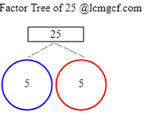

Factoring Calculator: If you ever need assistance with finding factors of a given number take the help of the online tool provided. Just enter the input integer and you will get the factors in the blink of an eye. Scroll down to find the detailed procedure on how to evaluate Factoring using different methods. To help you out, we even jotted down the solved examples showing step by step.
How to Factor Numbers?
Use the simple procedure on how to factor numbers using the trial division method. Following it you will arrive at the solution easily. They are along the lines
- Find the square root of an integer number n and round it to the closest number. Let the number be s
- Start with 1 and find the corresponding factor pair n ÷ 1 = n. Thus 1, n are factor pairs as the division results in a whole number leaving a remainder zero.
- Continue the process with number 2 and test all the integers (n ÷ 2, n ÷ 3, n ÷ 4… n ÷ s) through the square root rounded to s. List out the factor pairs wherein the remainder is zero.
- By the time you have reached n ÷ s and noted all the factor pairs, you are done with the successful factoring of n.
Get Top Notch Calculators of Maths included with a variety of concepts like area, perimeter, factor tree, percentages, algebra, trigonometric functions, etc. all at one place Onlinecalculator.guru
Example
What are the Factors of 14
Solution:
The Square root of 14 is 3.7416 and rounding it we get 4
Testing the integer value 1 through 4 for the division into 14 and checking for the factors that leave a remainder zero.
The numbers that leave a remainder zero when dividing the number 14 are 1, 2, 7, 14
Factor Pairs are (1,14)(2,7)(7,2)(14,1)
Take the help of Factoring Calculator to evaluate the Factors of Number 25 i.e. 1, 5, 25 the integers that divide the number 25 leaving a remainder zero.
Factor Tree of 25 to evaluate the factors
- Split the number 25 into two factors that can result in the same product after multiplication. That means 5*5 = 25
- 5 is a Prime number and the procedure ends here as the numbers can’t be expressed as a product anymore. Factor Tree of 25 looks as under

Here are some samples of factoring calculations.
- Factors of 128
- Factors of 160
- Factors of 162
- Factors of 176
- Factors of 180
- Factors of 189
- Factors of 192
- Factors of 196
How to find Factors of 25?
To find factors of 25 check for the numbers that divide 25 exactly and leaves a remainder zero. Check for all the integers that divide 25 by all the numbers up to 25. Make a note of numbers that results in the remainder zero.
1, 5, 25 are factors that divide 25 leaving a remainder zero.
Factoring Calculator | Table of Factors from 1 to 100
| Number | Factors | Prime or Composite |
| 1 | 1 | Neither prime nor composite |
| 2 | 1, 2 | Prime |
| 3 | 1, 3 | Prime |
| 4 | 1, 2, 4 | Composite |
| 5 | 1, 5 | Prime |
| 6 | 1, 2, 3, 6 | Composite |
| 7 | 1, 7 | Prime |
| 8 | 1, 2, 4, 8 | Composite |
| 9 | 1, 3, 9 | Composite |
| 10 | 1, 2, 5, 10 | Composite |
| 11 | 1, 11 | Prime |
| 12 | 1, 2, 3, 4, 6, 12 | Composite |
| 13 | 1, 13 | Prime |
| 14 | 1, 2, 7, 14 | Composite |
| 15 | 1, 3, 5, 15 | Composite |
| 16 | 1, 2, 4, 8, 16 | Composite |
| 17 | 1, 17 | Prime |
| 18 | 1, 2, 3, 6, 9, 18 | Composite |
| 19 | 1, 19 | Prime |
| 20 | 1, 2, 4, 5, 10, 20 | Composite |
| 21 | 1, 3, 7, 21 | Composite |
| 22 | 1, 2, 11, 22 | Composite |
| 23 | 1, 23 | Prime |
| 24 | 1, 2, 3, 4, 6, 8, 12, 24 | Composite |
| 25 | 1, 5, 25 | Composite |
| 26 | 1, 2, 13, 26 | Composite |
| 27 | 1, 3, 9, 27 | Composite |
| 28 | 1, 2, 4, 7, 14, 28 | Composite |
| 29 | 1, 29 | Prime |
| 30 | 1, 2, 3, 5, 6, 10, 15, 30 | Composite |
| 31 | 1, 31 | Prime |
| 32 | 1, 2, 4, 8, 16, 32 | Composite |
| 33 | 1, 3, 11, 33 | Composite |
| 34 | 1, 2, 17, 34 | Composite |
| 35 | 1, 5, 7, 35 | Composite |
| 36 | 1, 2, 3, 4, 6, 9, 12, 18, 36 | Composite |
| 37 | 1, 37 | Prime |
| 38 | 1, 2, 19, 38 | Composite |
| 39 | 1, 3, 13, 39 | Composite |
| 40 | 1, 2, 4, 5, 8, 10, 20, 40 | Composite |
| 41 | 1, 41 | Prime |
| 42 | 1, 2, 3, 6, 7, 14, 21, 42 | Composite |
| 43 | 1, 43 | Prime |
| 44 | 1, 2, 4, 11, 22, 44 | Composite |
| 45 | 1, 3, 5, 9, 15, 45 | Composite |
| 46 | 1, 2, 23, 46 | Composite |
| 47 | 1, 47 | Prime |
| 48 | 1, 2, 3, 4, 6, 8, 12, 16, 24, 48 | Composite |
| 49 | 1, 7, 49 | Composite |
| 50 | 1, 2, 5, 10, 25, 50 | Composite |
| 51 | 1, 3, 17, 51 | Composite |
| 52 | 1, 2, 4, 13, 26, 52 | Composite |
| 53 | 1, 53 | Prime |
| 54 | 1, 2, 3, 6, 9, 18, 27, 54 | Composite |
| 55 | 1, 5, 11, 55 | Composite |
| 56 | 1, 2, 4, 7, 8, 14, 28, 56 | Composite |
| 57 | 1, 3, 19, 57 | Composite |
| 58 | 1, 2, 29, 58 | Composite |
| 59 | 1, 59 | Prime |
| 60 | 1, 2, 3, 4, 5, 6, 10, 12, 15, 20, 30, 60 | Composite |
| 61 | 1, 61 | Prime |
| 62 | 1, 2, 31, 62 | Composite |
| 63 | 1, 3, 7, 9, 21, 63 | Composite |
| 64 | 1, 2, 4, 8, 16, 32, 64 | Composite |
| 65 | 1, 5, 13, 65 | Composite |
| 66 | 1, 2, 3, 6, 11, 22, 33, 66 | Composite |
| 67 | 1, 67 | Prime |
| 68 | 1, 2, 4, 17, 34, 68 | Composite |
| 69 | 1, 3, 23, 69 | Composite |
| 70 | 1, 2, 5, 7, 10, 14, 35, 70 | Composite |
| 71 | 1, 71 | Prime |
| 72 | 1, 2, 3, 4, 6, 8, 9, 12, 18, 24, 36, 72 | Composite |
| 73 | 1, 73 | Prime |
| 74 | 1, 2, 37, 74 | Composite |
| 75 | 1, 3, 5, 15, 25, 75 | Composite |
| 76 | 1, 2, 4, 19, 38, 76 | Composite |
| 77 | 1, 7, 11, 77 | Composite |
| 78 | 1, 2, 3, 6, 13, 26, 39, 78 | Composite |
| 79 | 1, 79 | Prime |
| 80 | 1, 2, 4, 5, 8, 10, 16, 20, 40, 80 | Composite |
| 81 | 1, 3, 9, 27, 81 | Composite |
| 82 | 1, 2, 41, 82 | Composite |
| 83 | 1, 83 | Prime |
| 84 | 1, 2, 3, 4, 6, 7, 12, 14, 21, 28, 42, 84 | Composite |
| 85 | 1, 5, 17, 85 | Composite |
| 86 | 1, 2, 43, 86 | Composite |
| 87 | 1, 3, 29, 87 | Composite |
| 88 | 1, 2, 4, 8, 11, 22, 44, 88 | Composite |
| 89 | 1, 89 | Prime |
| 90 | 1, 2, 3, 5, 6, 9, 10, 15, 18, 30, 45, 90 | Composite |
| 91 | 1, 7, 13, 91 | Composite |
| 92 | 1, 2, 4, 23, 46, 92 | Composite |
| 93 | 1, 3, 31, 93 | Composite |
| 94 | 1, 2, 47, 94 | Composite |
| 95 | 1, 5, 19, 95 | Composite |
| 96 | 1, 2, 3, 4, 6, 8, 12, 16, 24, 32, 48, 96 | Composite |
| 97 | 1, 97 | Prime |
| 98 | 1, 2, 7, 14, 49, 98 | Composite |
| 99 | 1, 3, 9, 11, 33, 99 | Composite |
| 100 | 1, 2, 4, 5, 10, 20, 25, 50, 100 | Composite |
Example: All the factors of 12
- 2 × 6 = 12,
- but also 3 × 4 = 12,
- and of course 1 × 12 = 12.
So 1, 2, 3, 4, 6 and 12 are factors of 12.
And also -1,-2,-3,-4,-6 and -12, because you get a positive number when you multiply two negatives, such as (-2)×(-6) = 12
Answer: 1, 2, 3, 4, 6, 12, -1, -2, -3, -4, -6, -12
Factoring Calculator – How Can I Do It Myself?
Work from the outside in!
Example: All the factors of 20.
Start at 1: 1×20=20, so put 1 at the start, and put its “partner” 20 at the other end:
| 1 | 20 |
Then try 2. 2×10=20 works, so put in 2 and 10:
| 1 | 2 | 10 | 20 |
Then try 3. 3 doesn’t work (3×6=18 is too low, 3×7=21 is too high).
Then try 4. 4×5=20 works, so put them in:
| 1 | 2 | 4 | 5 | 10 | 20 |
There is no whole number between 4 and 5 so you are done! (Don’t forget the negative ones).
| 1 | 2 | 4 | 5 | 10 | 20 |
| -1 | -2 | -4 | -5 | -10 | -20 |
FAQs on Factoring Numbers | Factors of a Number Calculator
1. What is a factor?
A factor is a number that divides into another number exactly and without leaving a remainder.
2. How to find factoring of numbers easily?
Take the help of the Factoring Calculator to find factors of given numbers in the blink of an eye.
3. Where do I get a detailed procedure on Factoring Numbers?
You can get a detailed procedure on factoring numbers on our page.
4. Where can I find Solved Examples on Factoring?
You can find Solved Examples on Factoring provided with detailed steps on our page.
5. What are the Factors of 25?
Factors of 25 are 1, 5, 25.
6. How to find Factors of 25?
You can find Factors of 25 by simply dividing with all the integers up to 25. Factors are those numbers that leave a remainder zero.
7. Where do I get the detailed procedures on finding factors of 25?
You can get a detailed procedure on finding factors of 25 on our page.
You can Also Check: